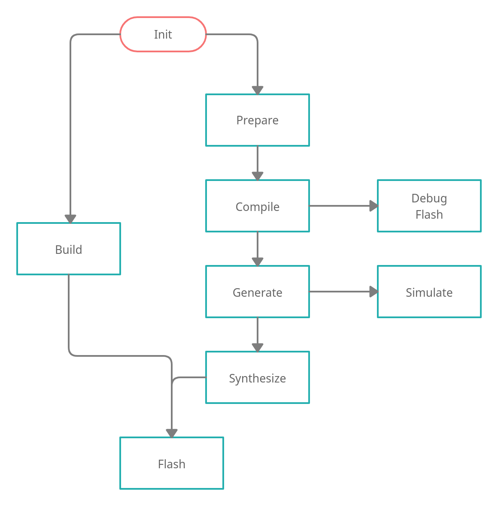

General Tasks
For common tasks a dedicated tool exists called elements.py. This can be used to initialize or
clean the project or to get information about available SOCs or boards.
Checkout
The checkout command checks out all repositories from either the default release manifest
or a custom file given with the --manifest parameter.
./elements.py init [--manifest next.xml] [-f]
Init
The init command downloads all repositories or toolchains and compiles required binaries. By
default the current release manifest will be used. Another manifest can be passed as argument with
the --manifest parameter. To re-initialize the project, the parameter -f can force to
initialize.
./elements.py init [--manifest next.xml] [-f]
Clean
The clean command can remove all build artifacts for a kit, soc or the entire build.
./elements.py clean [<soc> [<board>]]
SOCs
The socs command lists all available SOCs.
./elements.py socs
Boards
The boards command lists all available boards for a SOC.
./elements.py boards <soc>
FPGA Flow
The SDK has some stages to generate a MCU and its firmware from sources. This section describes each stage and the flow between them.
{kind=link}
After the SDK was initialized, two pathes are possible. The shortest is to build a bitstream,
which can be flashed to a FPGA board directly. Otherwise, a step-by-step path allows to check and
debug. First, prepare necessary files for the toolchains. Secondly, compile the firmware
with an given application. Either debug or flash it to a running design or generate
the SOC design. Afterwards, it’s possible to simulate the design or synthesize the
bitstream. Lastly, flash the generated bitstream to a FPGA board.
The SDK flow can be used with the elements-fpga.py tool. This chapters explains each stage of
the flow. However, the help text can also support with the built-in commands.
./elements-fpga.py -h
Prepare
The prepare command creates data for a kit which are required by the following commands.
./elements-fpga.py <soc> <board> prepare
Example to prepare a kit with a Hydrogen1 SOC for the Nexys4-DDR board:
./elements-fpga.py Hydrogen1 Nexys4-DDR prepare
Compile (Zephyr)
The compile command compiles an application for a board. Both values must be passed as
mandatory argument. An optional flag -f can force to not use the build cache and compile
entirely new.
./elements-fpga.py <soc> <board> compile zephyr <application> [-f]
Example to compile the LED demo for a kit with the Hydrogen1 SOC and the Nexys4-DDR board:
./elements-fpga.py Hydrogen1 Nexys4-DDR compile zephyr-samples/demo/leds
Generate (Zibal)
The generate command can build a SOC designs for a kit. Moreover, it will create files for
the toolchains.
Tip
FPGA based SOC designs will add the compiled Zephyr binary into the memory.
./elements-fpga.py <soc> <board> generate
Example to build the Hydrogen1 SOC for a kit with the Nexys4-DDR board.
./elements-fpga.py Hydrogen1 Nexys4-DDR generate
Simulate
The simulate command can simulate a kit. The toolchain can be passed with the optional
parameter --toolchain. The Open-Source toolchain is selected by default. A further
option can select the source type to simulate for example a synthesized design.
./elements-fpga.py <soc> <board> simulate
Example to simulate a kit with the Hydrogen1 SOC and the Nexys4-DDR board:
./elements-fpga.py Hydrogen1 Nexys4-DDR simulate
Synthesize
The synthesize is similiar to the simulate. It can synthesize a SOC design for a board.
./elements-fpga.py <soc> <board> synthesize [--toolchain <xilinx/symbiflow>]
Example to synthesize a kit with the Hydrogen1 SOC and the Nexys4-DDR board:
./elements-fpga.py Hydrogen1 Nexys4-DDR synthesize --toolchain symbiflow
Build
Sometimes only the bitsream is required and to not run all steps, the build command can
prepare, compile, generate and synthesize a design. It requires an application if the board
requests one.
./elements-fpga.py <soc> <board> build [<application>]
Example to build a kit with the Hydrogen1 SOC and the Nexys4-DDR board:
./elements-fpga.py Hydrogen1 Nexys4-DDR build zephyr-samples/startup/mtimer/ \
--toolchain symbiflow
Flash
This command flashes a bitsream directly into a FPGA or permantly into a SPI NOR. Alternatively, it can also flash a firmware into the memory of the MCU. The FPGA destination is set by default.
./elements-fpga.py <soc> <board> flash [--destination <fpga/spi/memory>]
Example to flash the FPGA on a kit with the Hydrogen1 SOC and the Nexys4-DDR board:
./elements-fpga.py Hydrogen1 Nexys4-DDR flash
Debug
The debug command supports debugging the firmware. It flashes a new firmware and opens a debugger (GDB) before starting at start address.
./elements-fpga.py <soc> <board> debug
Example to flash the firmware into the memory and start at the start address:
./elements-fpga.py Hydrogen1 Nexys4-DDR debug
Test
Applications can be simulated on a kit to verify the hard- and software of peripherals works as expected by checking against predefined test cases.
./elements-fpga.py <soc> <board> <testcase> test
Example to test the mtimer startup application for the Hydrogen1 SOC and the Nexys4-DDR board:
./elements-fpga.py Hydrogen1 Nexys4-DDR mtimer test
Benchmark
This command provides speed and size information about a kit. These data are useful to compare different kind of kits among each other.
./elements-fpga.py <soc> <board> benchmark
Example to generate speed and size information for the Hydrogen1 SOC and the Nexys4-DDR board:
./elements-fpga.py Hydrogen1 Nexys4-DDR benchmark
Note
This command is only available in release v22.2 or later.
ASIC Flow
TBD.